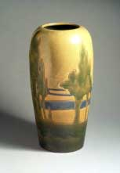
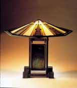
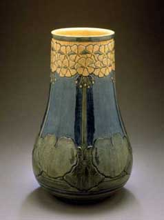

| The Arts & Crafts Movement in Europe and America, 1880–1920: Design for the Modern World
On view from October 16, 2005 through January 8, 2006 at the Cleveland Museum of Art
 The Cleveland
Museum of Art (CMA) welcomes the landmark exhibition The
Arts & Crafts Movement in Europe and America, 1880–1920:
Design for the Modern World, on view Oct. 16, 2005, to Jan. 8, 2006.
This groundbreaking exhibition, organized by the Los
Angeles County Museum of Art (LACMA), is the first to demonstrate
the significance of the widespread international Arts and Crafts
movement of Europe and the United States. The Cleveland
Museum of Art (CMA) welcomes the landmark exhibition The
Arts & Crafts Movement in Europe and America, 1880–1920:
Design for the Modern World, on view Oct. 16, 2005, to Jan. 8, 2006.
This groundbreaking exhibition, organized by the Los
Angeles County Museum of Art (LACMA), is the first to demonstrate
the significance of the widespread international Arts and Crafts
movement of Europe and the United States.
Including more than 300 influential objects created in all media
between 1880 and 1920, from ceramic and metalwork to textiles and
works on paper, this exhibition demonstrates the evolution of the
object and the way that the object affected one’s life during
this period of time, advancing the dawn of the modern age.
The Arts and Crafts movement began as a reaction to social and
economic anxiety after nearly a century of intense industrial modernization.
Great Britain, the most industrialized country at the turn of the
century, became the initial hub of the Arts and Crafts movement.
The Arts and Crafts Exhibition Society was founded in 1887 in London
on the belief that a culture’s applied art was as vital to
that culture as its fine art. Individuality in a crafter’s
piece, along with innovation and creativity, molded the Arts and
Crafts Exhibition Society into a significant artistic movement that
later grew into one of a philosophical, political and cultural nature.
Members of the society, including John Ruskin and William Morris,
advocated the improvement of working conditions, the reintegration
of art into everyday life and the unification of all forms of art.
The movement’s principles were widely spread by the start
of the twentieth century and had developed into a language of democratic
phrases including “joy in labor,” “unity in design,”
and “fidelity to place.” These potent phrases allowed
the public to visualize the Arts and Crafts movement’s many
ideologies.
“This exhibition looks at how the
philosophies of the Arts and Crafts movement spread across Europe
and to the United States influencing not only the way objects were
made, but how they looked and were used,” CMA Curator of Decorative
Arts and Design Stephen Harrison said. “This landmark exhibition
is the first to examine how widespread the Arts and Crafts movement
became as designers and consumers alike embraced its ideals,”
Harrison added. The Arts & Crafts Movement in Europe and America,
1880–1920: Design for the Modern World will include objects
made in England, Scotland, Germany, Austria, Hungary, Denmark, Norway,
Sweden, Finland, Belgium, France, and the United States.
Seventy-five institutions and private collections have lent exceptional
objects, including many masterworks by key designers of the period,
such as Frank Lloyd Wright’s (American, 1867–1959) Table
Lamp from the Susan Lawrence Dana House (pictured below) and a chair
from his studio in Oak Park, Illinois; views of Greene and Greene’s
(American) Robert R. Blacker House, along with an armchair and cabinet
from the house; William Morris’s (British, 1834–1896)
textile Rose; Josef Hoffmann’s (Austrian, 1870–1956)
Tea Service (pictured below); along with works by M. H. Baillie
Scott (British, 1865–1945), Henry Van de Velde (Belgian, 1863–1959),
Peter Behrens (German, 1868–1940), Eliel Saarinen (Finnish,
1873–1950) and Gustav Stickley (American, 1858–1942).

All of the objects in the exhibition are explored through the three
reoccurring themes of the time, Art and Industry, Design
and National Identity, and Arts and Life.
Art
and Industry
Though the Arts and Crafts movement regarded its pre-industrial
past in the highest respect, it did not completely discard the present.
The movement had a few conflicting ideals, including a belief that
machines should be used as a way to rid workers of mindless tasks
rather than for mass production, and the idea that objects should
be useful to as well as being affordable for the average person.
Even though the movement struggled with these two opposing views,
what was most important to the movement was the ‘process of
making’ an object.
Design and the National Identity
The Arts and Crafts Movement believed that a country’s character
could be expressed through design and reinforced by that design.
Designers, craftsmen and artists used this technique in their fields.
This became a new form of patriotism, known today as Romantic Nationalism.
Art and Life
 One
of the most important and fundamental concepts of the Arts and Crafts
movement was the idea of the complete integration of art and everyday
life. This was done most thoroughly through utopian art colonies
around the globe. Four of these art colonies have been included
in this exhibition, including Darmstadt, Germany; C. R. Ashbee’s
Guild of the Handicraft in Britain; Gödöllo, Hungary;
and the Roycrofters of East Aurora, New York. One
of the most important and fundamental concepts of the Arts and Crafts
movement was the idea of the complete integration of art and everyday
life. This was done most thoroughly through utopian art colonies
around the globe. Four of these art colonies have been included
in this exhibition, including Darmstadt, Germany; C. R. Ashbee’s
Guild of the Handicraft in Britain; Gödöllo, Hungary;
and the Roycrofters of East Aurora, New York.
These three themes envelop several issues still debated today, including
individuality versus standardization of objects and the definition
of a design that most benefits society.
This exhibition was organized by the Los Angeles County Museum
of Art and was made possible by Max Palevsky. This project is supported
in part by an award from the National Endowment for the Arts.
Related Programs (PDF)
Photos © Photo © Róth Miksa Emlékház/The
Metropolitan Museum of Art/Museum Associates / LACMA
More Articles |